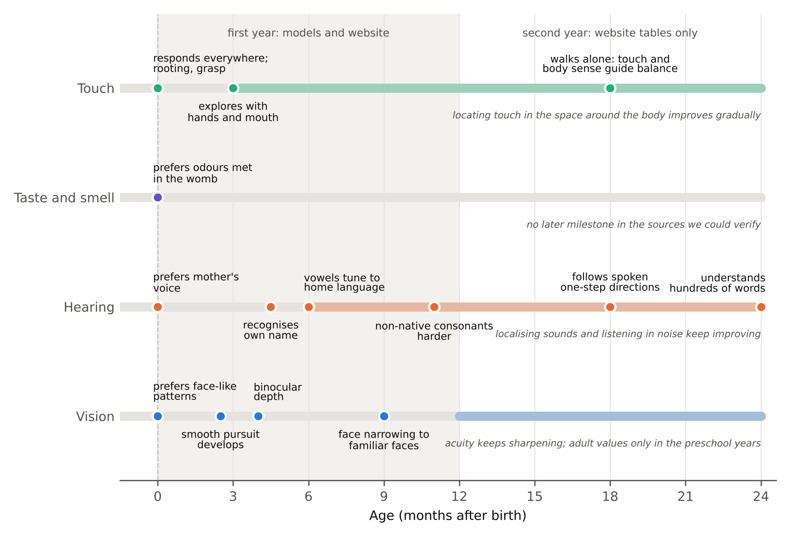
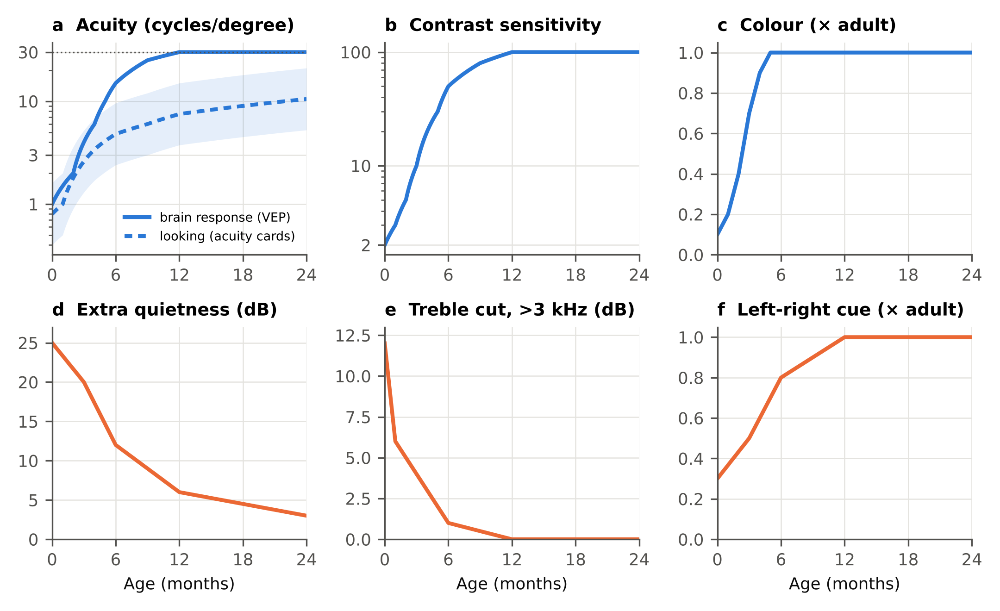
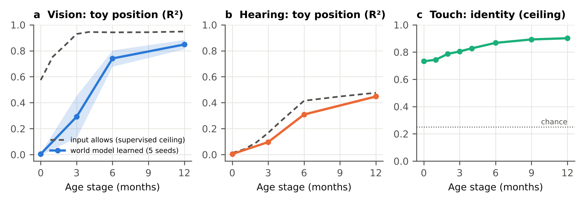
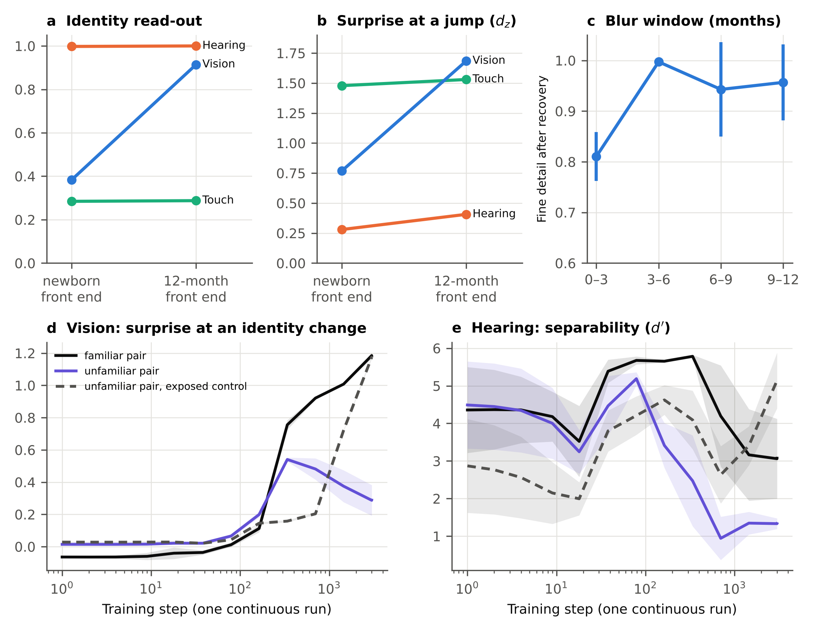
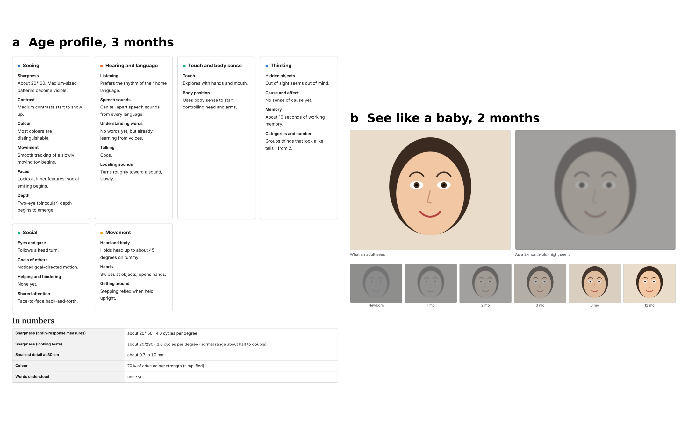

Paper 2
What Infants Sense at Each Age: Age-Tuned Neural Networks and an Interactive Simulator
Somesh Mohapatra · 2026 · PDF · LaTeX source
Scope. This paper is about sensory perception, not thinking or understanding. The Baby Senses Lab it describes is a simulation and research tool, not a screening or diagnostic test.
In short
- Each sense starts at a different point. Touch, taste and smell work at birth and are shaped before it; hearing starts in the womb and tunes to the home language over the first year; vision starts far behind and sharpens fastest in the first six months.
- Immaturity can be written as a filter. Each sense passes through a fixed, age-indexed front end (blur, contrast, colour; loudness, treble, left-right cues), and a small prediction network learns behind it.
- The filters alone set the order of the senses, by construction. A measure based on how much information the input holds does not recover that order.
- In vision, networks learn far less than their input allows early on (0.00 against 0.57 at the newborn stage); in hearing they track what the input allows.
- Experience effects emerge from plain prediction: a critical period for visual detail, perceptual narrowing, and an earlier sense crowding out a later one.
- The Baby Senses Lab uses the same filters to show a photo, video or sound as a baby of a chosen age might sense it.
Figures





Cite
Mohapatra S. What Infants Sense at Each Age: Age-Tuned Neural Networks and an Interactive Simulator. 2026.
https://github.com/pikulsomesh/developmental-world-models/tree/main/papers/baby-senses